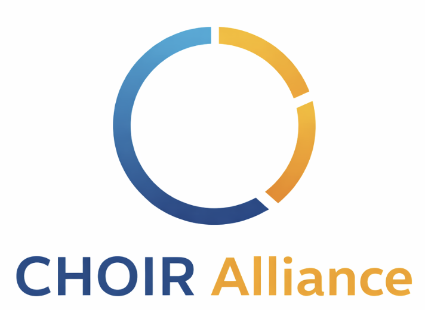

Federated Learning
Privacy-preserving AI development across institutions without moving sensitive data.

Working Groups
Working groups bring together researchers, technical experts, clinicians, trainees, and partners to address shared challenges and develop practical solutions.
Founding Working Groups
Privacy-preserving AI development across institutions without moving sensitive data.
Implementation, adoption, dissemination, evaluation, and real-world impact.
Data harmonization, interoperability, standards, and reusable research infrastructure.
Emerging Groups
Collaborative funding opportunities and proposal development.
Evaluation and deployment of AI within real health systems.
Training programs, workshops, and mentorship opportunities.
Building collaborations across Canada and around the world.
How Working Groups Operate
Get Involved
CHOIR members can participate in existing groups or help establish new ones.
Join CHOIR